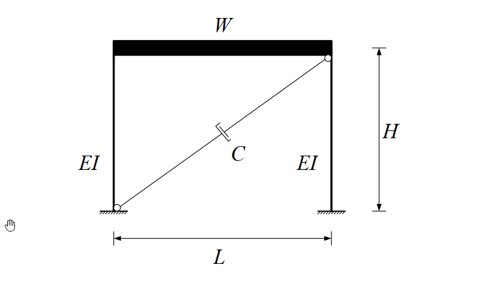

考題編號：SD-2018-1
主分類： SD-U1-3 單自由度、多自由度系統之動態分析及應用
副分類： SD-U3-2 隔減震原理（被動控制：黏性阻尼器）
分析方法： SDOF 強迫振動（基礎激振）+ 對角黏性阻尼器等效阻尼推導
標籤： SDOF 剪力建築 線性黏性阻尼器 對角斜裝阻尼器 等效阻尼 阻尼比 餘弦投影 加速度反應譜 最大位移 阻尼器出力
1. 原始題目重述 (Problem Restatement)
結構條件

圖說：單層單跨剪力屋架。樓層總重 W = 70 kN，樓高 H = 3 m，跨距 L = 6 m。兩根固端柱，每根撓曲剛度 EI = 5000 kN-m²。阻尼器 C（kN-s/m）以對角斜稱方式裝設（從一角落延伸至對角落）。系統阻尼完全由阻尼器提供，忽略結構固有阻尼。
子題
(一)（15分） 假設線性黏性阻尼器所提供之系統阻尼比 ξ = 5%，求阻尼係數 C（kN-s/m）。
(二)（10分） 若此剪力屋受地震激發，5% 阻尼比加速度彈性反應譜為：
$$S_a = \frac{0.15g}{T} \leq 0.3g, \quad g = 9.8 \text{ m/s}^2$$
求單層剪力屋相對於地表之最大水平位移與阻尼器之最大出力。
2. 考題核心精神與出題者意圖 (Core Concepts & Examiner's Intent)
核心觀念：
- 對角安裝阻尼器的幾何投影——阻尼器軸向速度是樓層側向速度的 cosθ 倍，等效水平阻尼係數為 C·cos²θ。
- SDOF 系統自然頻率、週期，以及從阻尼比反推阻尼係數 C。
- 反應譜的正確讀值（判斷在哪個區段），再由 Sa 求 Sd（位移），由 Sv 求阻尼器出力。
出題意圖：
- 測驗考生是否熟悉對角阻尼器幾何轉換（cos²θ 投影）——常見陷阱是直接用 C = ξ·c_cr，忘記 cos²θ 修正。
- 測驗反應譜讀值判斷（T < 0.5 s 時處於加速度控制平台段）。
- 測驗從加速度反應譜求位移的路徑（Sa → Sd = Sa/ω₀²）。
3. 解題戰略地圖與陷阱分析 (Strategic Roadmap & Trap Analysis)
作戰順序：
- 求結構側向勁度 k（固定端柱公式）
- 求自然頻率 ω₀ 和週期 T
- 求對角阻尼器幾何投影 cosθ
- 由 ξ = C·cos²θ/(2mω₀) 解出 C
- 查反應譜確認 Sa（判斷區段）
- 求最大位移 Sd = Sa/ω₀²
- 求阻尼器最大出力 F_d = C·Sv·cosθ
陷阱清單：
| # | 陷阱 | 正確做法 |
|---|---|---|
| ★★★ | 阻尼器等效阻尼係數 c_eff = C（忘記 cos²θ） | c_eff = C·cos²θ，因樓層位移 u 使阻尼器伸長量僅 u·cosθ |
| ★★ | 反應譜區段判斷錯誤：直接用 Sa = 0.15g/T | T = 0.252 s < 0.5 s，處平台段，Sa = 0.3g |
| ★★ | 阻尼器最大出力用位移計算 | 阻尼器為速度相依元件，出力 F = C·δ̇ = C·Sv·cosθ |
| ★ | 質量單位混淆（重力 kN vs 質量 kN·s²/m） | m = W/g = 70/9.8 |
3.5 變數層次分析 (Variable Hierarchy Analysis)
複習提示：第一次解題後，在每個卡住的知識點旁標記
⚠；第二次複習時只看有⚠的項目。
最終目標
(一) 求阻尼係數 C（kN-s/m）；(二) 求最大水平位移 Sd 與阻尼器最大出力 F_d,max
本題關鍵公式（依計算順序）
$$\text{Step 1: } k = 2 \times \frac{12EI}{H^3}$$
$$\text{Step 2: } \omega_0 = \sqrt{\frac{k}{m}},\quad m = \frac{W}{g}$$
$$\text{Step 3: } \cos\theta = \frac{L}{\sqrt{H^2 + L^2}},\quad c_{\text{eff}} = C \cdot \cos^2\theta$$
$$\text{Step 4（一）: } \xi = \frac{c_{\text{eff}}}{2m\omega_0} \Rightarrow C = \frac{\xi \cdot 2m\omega_0}{\cos^2\theta}$$
$$\text{Step 5: } T = \frac{2\pi}{\boxed{\omega_0}},\quad S_a = \min\!\left(\frac{0.15g}{T},\; 0.3g\right)$$
$$\text{Step 6（二）: } S_d = \frac{S_a}{\boxed{\omega_0}^2}$$
$$\text{Step 7（二）: } S_v = \boxed{\omega_0} \cdot \boxed{S_d},\quad F_{d,\text{max}} = \boxed{C} \cdot \cos\theta \cdot \boxed{S_v}$$
L1：題目直接給定
| 符號 | 數值 | 說明 |
|---|---|---|
| W | 70 kN | 樓層總重 |
| H | 3 m | 樓高 |
| L | 6 m | 跨距 |
| EI | 5000 kN-m² | 每根柱撓曲剛度 |
| ξ | 5% = 0.05 | 系統阻尼比（阻尼器提供） |
| g | 9.8 m/s² | 重力加速度 |
L2：需知識點推導
結構系統參數
| 符號 | 公式／來源 | 卡關? |
|---|---|---|
| k | 2×12EI/H³（兩固端柱並聯） | |
| m | W/g | |
| ω₀ | √(k/m) | |
| T | 2π/ω₀ |
阻尼器幾何
| 符號 | 公式／來源 | 卡關? |
|---|---|---|
| L_d | √(H²+L²)（對角長度） | |
| cosθ | L/L_d = L/√(H²+L²) | |
| cos²θ | (cosθ)² | |
| c_eff | C·cos²θ |
子題(一)：求 C
| 符號 | 公式／來源 | 卡關? |
|---|---|---|
| c_cr | 2mω₀（臨界阻尼係數） | |
| C | ξ·c_cr/cos²θ |
子題(二)：求 Sd 與 F_d
| 符號 | 公式／來源 | 卡關? |
|---|---|---|
| Sa | 判斷 T vs 0.5 s，取正確值 | |
| Sd | Sa/ω₀²（位移反應譜） | |
| Sv | ω₀·Sd（偽速度反應譜） | |
| δ̇_d,max | Sv·cosθ（阻尼器軸向最大速度） | |
| F_d,max | C·δ̇_d,max（阻尼器最大出力） |
L3：深層知識（不懂就卡住）
| 知識點 | 說明 | 卡關? |
|---|---|---|
| 對角阻尼器幾何轉換 | 樓層水平位移 u → 阻尼器伸長量 δ = u·cosθ，速度同比例；等效水平阻尼 c_eff = C·cos²θ（一次 cosθ 轉換伸長，一次 cosθ 轉換水平分力） | |
| 臨界阻尼係數 c_cr | c_cr = 2mω₀ = 2√(km)；ξ = c_eff/c_cr | |
| Sd、Sv、Sa 三者關係 | Sa = ω₀²·Sd；Sv = ω₀·Sd；Sa = ω₀·Sv（偽值，適用輕阻尼） | |
| 黏性阻尼器出力時機 | 最大出力發生在速度最大時（而非位移最大時），用 Sv 而非 Sd 計算 |
4. 步驟化詳細計算過程 (Step-by-Step Detailed Calculation)
Step 1：側向勁度 k
剪力屋架兩端固定柱，單柱側向剛度 = 12EI/H³，兩柱並聯：
$$k = 2 \times \frac{12EI}{H^3} = \frac{24 \times 5000}{3^3} = \frac{120{,}000}{27} \approx 4{,}444.4 \text{ kN/m}$$
Step 2：質量與自然頻率
$$m = \frac{W}{g} = \frac{70}{9.8} \approx 7.143 \text{ kN·s}^2/\text{m}$$
$$\omega_0 = \sqrt{\frac{k}{m}} = \sqrt{\frac{4{,}444.4}{7.143}} = \sqrt{622.2} \approx 24.94 \text{ rad/s}$$
$$T = \frac{2\pi}{\omega_0} = \frac{2\pi}{24.94} \approx 0.252 \text{ s}$$
Step 3：對角阻尼器幾何
$$L_d = \sqrt{H^2 + L^2} = \sqrt{3^2 + 6^2} = \sqrt{45} = 3\sqrt{5} \approx 6.708 \text{ m}$$
$$\cos\theta = \frac{L}{L_d} = \frac{6}{3\sqrt{5}} = \frac{2}{\sqrt{5}} \approx 0.8944$$
$$\cos^2\theta = \frac{4}{5} = 0.8$$
策略註解：阻尼器對角安裝，樓層發生水平位移 u 時，阻尼器伸長量為 u·cosθ（幾何小位移線性化）。水平有效阻尼力 = C·u̇·cosθ·cosθ = C·cos²θ·u̇，故等效水平阻尼係數 c_eff = C·cos²θ。
Step 4（一）：求 C
臨界阻尼係數：
$$c_{cr} = 2m\omega_0 = 2 \times 7.143 \times 24.94 = 356.3 \text{ kN·s/m}$$
由 ξ = c_eff/c_cr：
$$\xi = \frac{C \cdot \cos^2\theta}{c_{cr}} \Rightarrow C = \frac{\xi \cdot c_{cr}}{\cos^2\theta} = \frac{0.05 \times 356.3}{0.8}$$
$$\boxed{C = \frac{17.815}{0.8} \approx 22.3 \text{ kN·s/m}}$$
Step 5（二）：讀取 Sa
反應譜轉折點：令 0.15g/T = 0.3g → T* = 0.5 s
由於 T = 0.252 s < 0.5 s（短週期加速度控制區），取加速度上限：
$$S_a = 0.3g = 0.3 \times 9.8 = 2.94 \text{ m/s}^2$$
Step 6（二）：最大水平位移
位移反應譜：
$$S_d = \frac{S_a}{\omega_0^2} = \frac{2.94}{622.2} \approx 0.00473 \text{ m}$$
$$\boxed{S_d \approx 4.73 \text{ mm} \approx 0.473 \text{ cm}}$$
策略註解：此為結構樓板相對地表的最大水平位移，即反應譜位移 Sd。
Step 7（二）：阻尼器最大出力
偽速度反應譜（pseudo-velocity）：
$$S_v = \omega_0 \cdot S_d = 24.94 \times 0.00473 = 0.1179 \text{ m/s}$$
阻尼器軸向最大速度：
$$\dot{\delta}_{d,\text{max}} = S_v \cdot \cos\theta = 0.1179 \times \frac{2}{\sqrt{5}} = 0.1179 \times 0.8944 = 0.1055 \text{ m/s}$$
阻尼器最大出力（軸向力）：
$$F_{d,\text{max}} = C \cdot \dot{\delta}_{d,\text{max}} = 22.3 \times 0.1055$$
$$\boxed{F_{d,\text{max}} \approx 2.35 \text{ kN}}$$
5. 關鍵爭議點與進階探討 (Critical Issues & Advanced Discussion)
爭議一：對角阻尼器應取單斜撐還是 X 型？
題目說「以對角斜稱方式裝設一線性黏性阻尼器」，確認為單一對角阻尼器。若為兩支 X 型對稱配置，則 c_eff = 2C·cos²θ，C 值需減半。考場上見圖 X 型時須注意「幾個阻尼器」。
爭議二：Sv 的使用
偽速度 Sv = ω₀·Sd 在中低頻段（T = 0.1~1 s）是良好近似，在本題 T = 0.252 s 屬合理應用。嚴格而言最大速度與最大位移不同時發生，但考試中以 Sv 計算為標準做法。
進階觀念：阻尼器對角安裝的最佳角度
等效阻尼係數 c_eff = C·cos²θ，在 θ=0°（水平裝設）時 cos²θ=1 最大，但實際上幾何限制使 θ=0° 不可行。設計上通常取 θ = 30°~45° 作為折衷，本題 θ ≈ 26.6° 屬較平緩角度，cos²θ = 0.8 仍有良好效率。